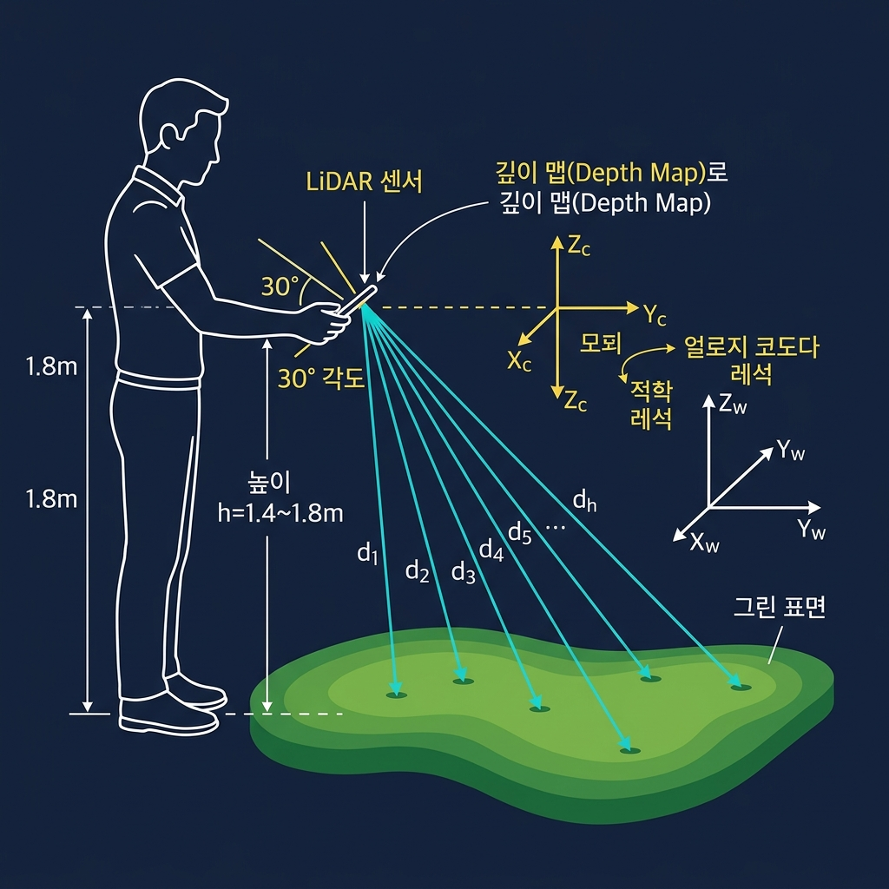
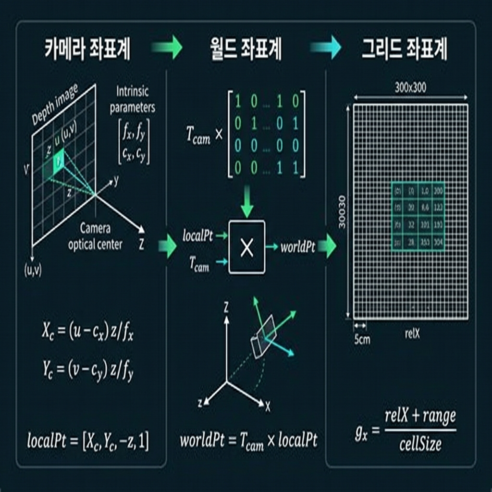
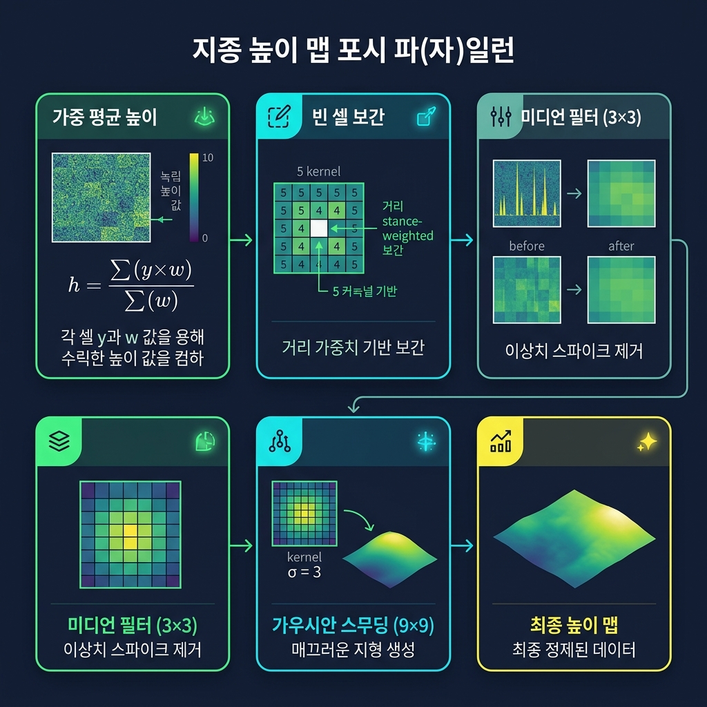
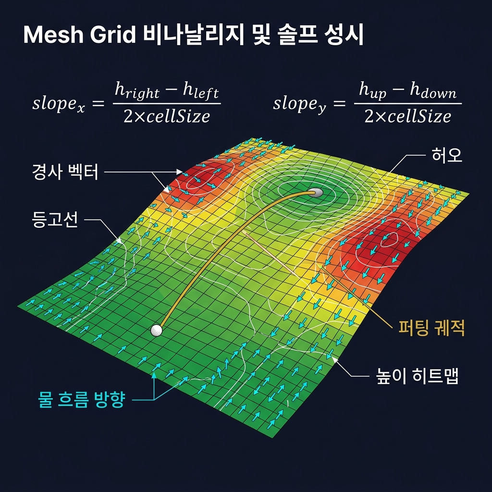

iOS ARKit 기반 LiDAR 거리측정 원리, 좌표 변환, 보정 알고리즘 및 메쉬그리드 개선 방안
iPhone LiDAR 센서로 골프 그린 지형을 3D 스캔한 후, 볼-홀 간 최적 퍼팅 궤적(브레이크 방향·속도)을 실시간으로 계산하여 AR 화면에 오버레이 표시

iPhone Pro LiDAR는 적외선 레이저를 방사하고 ToF(Time-of-Flight) 방식으로 각 픽셀의 깊이(d)를 kCVPixelFormatType_DepthFloat32 포맷으로 반환합니다. ARKit은 두 가지 깊이 맵을 제공합니다:
| 맵 종류 | 특징 | 사용 |
|---|---|---|
sceneDepth | 원시 LiDAR 데이터, 노이즈 포함 | 신뢰도 맵과 함께 원본 제공 |
smoothedSceneDepth | ARKit 내부 시계열 평활화 적용 | ✅ 이 앱에서 우선 사용 |
각 픽셀마다 ARKit이 신뢰도 레벨을 UInt8로 제공:
| 값 | 레벨 | 가중치 |
|---|---|---|
| 0 | Low | 0.3 |
| 1 | Medium | 0.6 |
| 2 | High | 1.0 |
Jet Colormap으로 깊이를 색상화 (~2fps 업데이트):
| 색상 | 의미 |
|---|---|
| 🔵 파랑 | 가까운 거리 (0.15m) |
| 🟢 초록 | 중간 거리 |
| 🔴 빨강 | 먼 거리 (4.0m) |
| ⬛ 어두움 | 유효범위 밖 / 미측정 |

카메라 내부 파라미터(intrinsics)를 사용하여 깊이 픽셀 (u, v)를 3D 카메라 좌표로 역투영합니다:
4×4 카메라 변환 행렬(T_cam)로 월드 좌표로 변환합니다. ARKit 월드계에서 Y축이 위(up)입니다:
그리드 원점(gridOriginX, gridOriginZ)을 기준으로 상대 좌표로 변환 후 셀 인덱스를 계산합니다:
첫 번째 유효 프레임에서 카메라 전방 7.5m 지점을 그리드 중심으로 설정합니다. 이렇게 하면 그리드가 카메라 기준 전방 0~15m 범위를 커버합니다:
ARKit 월드 좌표계의 Y축이 절대 높이 기준입니다. ARKit의 초기화 시 지면 평면 감지(planeDetection: horizontal)로 Y=0 기준면을 설정합니다. 각 셀의 높이는 worldPt.y 값의 가중 평균으로 결정됩니다.
카메라가 완전히 수평이면 그린 표면을 정확히 측정할 수 없습니다. 카메라 forward 벡터의 Y 성분으로 "아래를 향하는 정도"를 계산하고, 이를 신뢰도 가중치에 곱합니다:

이 앱은 높이 편차를 명시적으로 보정하지 않아도 되는 구조로 설계되어 있습니다. 그 이유는:
worldPt.y는 ARKit이 추적한 절대 세계 Y좌표입니다. 카메라가 1.4m에 있든 1.8m에 있든, 그린 표면의 worldPt.y는 동일하게 계산됩니다.T_cam은 카메라의 위치와 방향을 포함하므로, 높이가 달라도 동일한 그린 점은 동일한 worldPt.y로 수렴합니다.| 오차 원인 | 영향 | 현재 처리 |
|---|---|---|
| 카메라 높이 변화에 따른 측정 거리 범위 차이 |
높은 위치에서 더 넓은 표면 커버 → 원거리 포인트 정밀도 저하 |
valid range 0.1~5.0m 필터 부분 보정 |
| ARKit 추적 오차 누적 (VIO drift) |
긴 스캔 시 worldPt.y 편차 발생 | 다중 프레임 가중 평균 부분 보정 |
| 스캔 중 카메라 높이 변동 (걷거나 자세 변화) |
그리드 원점이 이미 설정되어 이후 포인트에 오프셋 발생 |
첫 프레임 원점 고정 미보정 |
| 스무딩 깊이 데이터의 시계열 지연 |
움직임 중 깊이값 지연 보정 | smoothedSceneDepth 사용 ARKit 보정 |
Low/Med/High → 0.3/0.6/1.0
tiltQuality × confBase
5회 반복 거리가중
3×3 이상값 제거
9×9 σ=3 커널
0.5° 미만 경사 무시
tiltQuality가 낮은 (수평에 가까운) 프레임은 신뢰도에 관계없이 낮은 가중치를 받아 최종 높이 맵 영향이 감소합니다.
| 지표 | 목표값 | 계산 방법 |
|---|---|---|
| averageConfidence | > 0.6 | 전체 픽셀 신뢰도 평균 (step=8 샘플) |
| coveragePercent | > 0.7 | 채워진 셀 / 바운딩박스 내 셀 수 |
| stabilityScore | > 0.5 | 1 - avg_movement × 50 (최근 30 pose) |
| lightingScore | > 0.5 | ambientIntensity / 1000.0 |
| tiltScore | > 0.2 | 1 - |fwdY - 0.5| / 0.5 (목표: sin30°=0.5) |
또한 3초 동안 커버리지 변화가 0.2% 미만이면 스캔 정체로 판단하여 자동 완료합니다.

현재는 2D 투영 오버레이만 지원합니다. SceneKit 또는 Metal을 이용한 실시간 3D 메쉬 렌더링으로 사용자가 그린을 직접 회전·확대해서 볼 수 있도록 개선하면 경사 이해도가 크게 향상됩니다.
현재 300×300 고정 해상도는 가까운 영역(볼 주변)과 먼 영역(5m 이상)을 동일하게 처리합니다. 볼-홀 주변을 고해상도(2.5cm), 외곽을 저해상도(10cm)로 처리하는 Level-of-Detail 그리드로 개선하면 정밀도와 성능을 동시에 향상시킬 수 있습니다.
높음 알고리즘 개선현재 등고선은 10단계 고정 간격입니다. 실제 고도 차이에 기반한 절대 높이 기준 등고선(예: 1cm 간격)과 각 등고선에 높이값 레이블을 추가하면 훨씬 직관적인 맵이 됩니다.
현재 물 흐름 화살표는 방향은 보여주지만 색상이 단색(cyan)입니다. 경사 크기에 따라 화살표 색상을 변화시키면(초록=완만, 빨강=급경사) 위험 구간을 한눈에 파악할 수 있습니다.
현재는 스캔 완료 후 한 번만 메쉬를 생성합니다. 스캔 중 누적 데이터를 0.5초마다 업데이트하여 실시간으로 메쉬가 채워지는 모습을 보여주면 사용자 경험이 향상됩니다.
낮음 UX 개선현재 저항값을 슬라이더로 수동 설정합니다. 측정된 지형 거칠기(estimateStimpSpeed)를 자동으로 저항값에 매핑하면 보다 물리적으로 정확한 퍼팅 계산이 가능합니다.